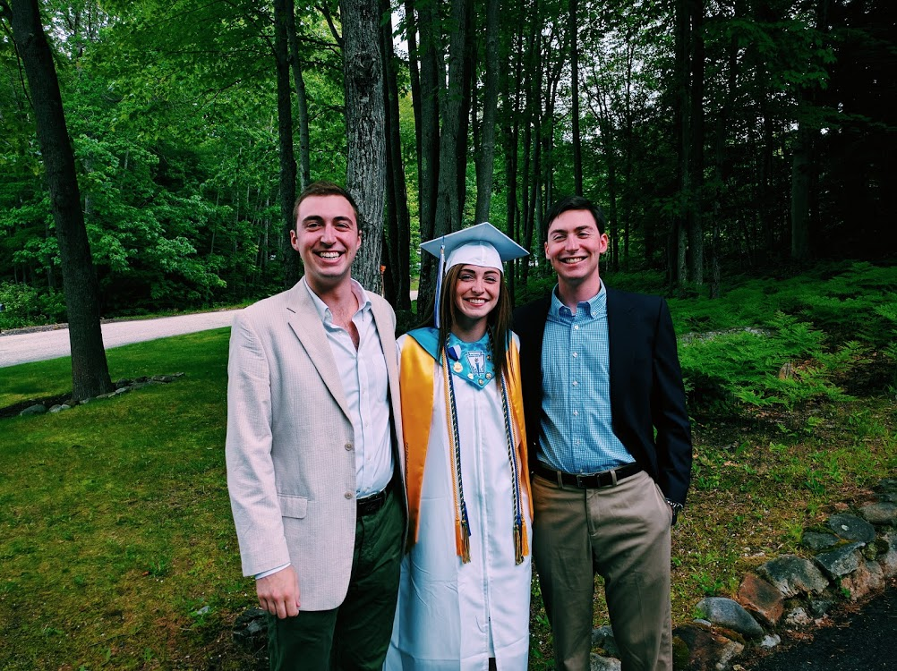

The Dumas Family
A UMaine Bunch!
I grew up in Lewiston, Maine in a loving home surrounded by my happily married parents and my two older brothers. The eldest is Jake who is 5 years older and graduated from University of Maine in 2016. He currently resides in Washington DC and works for Axiom startegies- a consulting firm for republican candidates. Jared's next-he's 3 years older and is currently attending UMaine with a major in political science. He will graduate in the spring of 2018. Oh! And did I mention? My parents are alumni of Umaine too. I even have multiple aunts and uncles who are also alumni. Yes, we truly are a black bear family and our blood is certainly black and blue! It's crazy to think we all ended up here at some point. I can't wait to come back for homecoming as an alumni alongside my whole family!

Jazy's Homepage